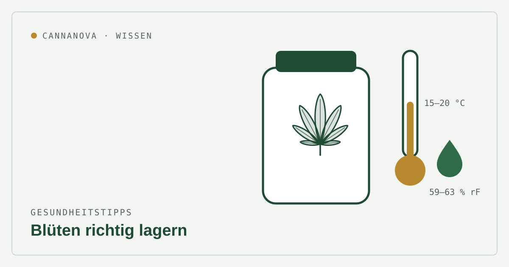

Gesundheitstipps
Cannabisblüten richtig lagern: Temperatur, Luftfeuchte & Haltbarkeit

Die Qualität von Cannabisblüten hängt nicht nur vom Anbau ab, sondern auch von der Lagerung. Falsch aufbewahrt verlieren Blüten Wirkstoffe und Aroma – oder es bildet sich Schimmel. Mit ein paar einfachen Regeln bleiben Wirkstoffe und Terpene über Monate erhalten.
Die vier „Feinde“ der Blüte sind Licht, Luft, Wärme und Feuchtigkeit. Wer diese vier im Griff hat, bewahrt Qualität und Wirksamkeit am besten.
Die richtigen Richtwerte
- Temperatur: kühl lagern, ideal etwa 15–20 °C. Hitze beschleunigt den Abbau; Einfrieren oder Kühlschrank können die empfindlichen Trichome schädigen.
- Luftfeuchte: ideal rund 59–63 % relative Luftfeuchte. Zu feucht begünstigt Schimmel, zu trocken macht die Blüte brüchig und lässt Terpene entweichen.
- Licht: dunkel aufbewahren. UV-Licht baut Cannabinoide und Terpene ab – ein Schrank ist besser als die Fensterbank.
- Luft: luftdicht verschließen, aber nicht ständig öffnen. Sauerstoff fördert den Abbau.
Das richtige Behältnis
Am besten eignet sich ein luftdicht verschließbares Glas an einem kühlen, dunklen Ort. Glas schützt vor UV-Licht und verändert – anders als manche Kunststoffe – weder Geschmack noch Qualität. Plastiktüten und einfache Kunststoffdosen sind ungeeignet, da sie die Qualität mindern und sich Trichome an der Wand absetzen können.
Sogenannte Feuchtigkeits-Pads (Humidity Packs) helfen, die relative Luftfeuchte im Glas automatisch im idealen Bereich zu halten – praktisch, wenn die Blüte über längere Zeit aufbewahrt wird.
Wie lange sind Blüten haltbar?
Richtig gelagert bleiben Cannabisblüten in der Regel etwa 6 bis 12 Monate weitgehend potent, bevor die Wirkstärke spürbar nachlässt. Beachten Sie immer das auf der Apothekenabgabe angegebene Verfalls- bzw. Verwendbarkeitsdatum und die Hinweise Ihrer Apotheke.
Kurz zusammengefasst
- Glas, luftdicht, kühl (15–20 °C) und dunkel.
- Luftfeuchte rund 59–63 %, ggf. mit Humidity Pack.
- Nicht einfrieren, nicht in den Kühlschrank, kein Plastikbeutel.
- Außerhalb der Reichweite von Kindern und unbefugten Personen.
Dieser Beitrag dient der allgemeinen Information und ersetzt keine ärztliche oder pharmazeutische Beratung. Beachten Sie stets die Angaben auf der Verpackung sowie die Hinweise Ihrer Apotheke. Medizinalcannabis ist ein verschreibungspflichtiges Arzneimittel.
Quellen
- How to Store Medical Cannabis Properly – Releaf UK. releaf.co.uk
- How to Store Medical Cannabis Properly – Botanical Sciences. botanicalsciences.com
- How To Store Medical Marijuana – The Healing Clinics. thehealingclinics.com